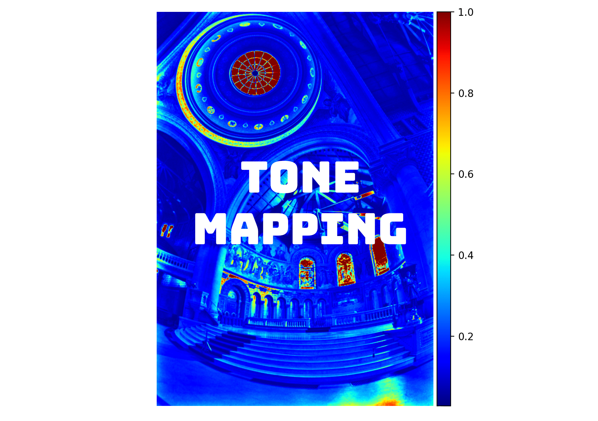

HDR from exposure brackets, tone-mapped for ordinary screens
October 2025
About
Standard cameras cannot capture the full dynamic range of many real-world scenes, so a single exposure is often too dark or too bright in different regions. This project builds a pipeline that fuses a stack of exposures of the same scene into one HDR radiance map, then applies tone mapping so the result can be displayed on a low-dynamic-range monitor.
Radiance recovery follows Debevec and Malik (1997); tone mapping includes Durand (2002)-style local processing alongside simpler global operators for comparison.
Pipeline
Read exposures: Parse shutter times and image paths from a stack on disk.
Sampling: Build a sample matrix of pixel values across exposures for robust fitting.
Recover response g: Per color channel, solve for the camera response / radiance relationship with a tent weight over intensities and a λ-smoothed second derivative (Debevec–Malik).
HDR radiance map: Combine exposures using recovered g and known log exposure times.
Visualization: Plot g curves; visualize log radiance (e.g. mean across channels with a colormap) and clipped RGB previews.
Tone mapping: Compare global operators (e.g. global scale, global simple) with a Durand-style local operator for display-ready LDR images.
Tech stack
PythonOpenCVNumPy

Results
Radiance visualization and tone-mapped outputs from several exposure stacks.